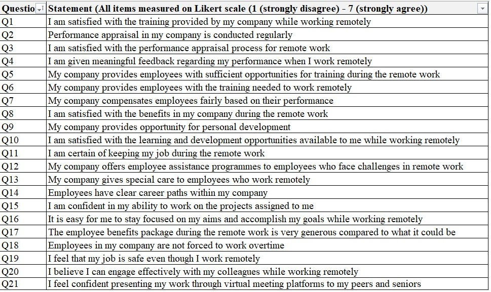
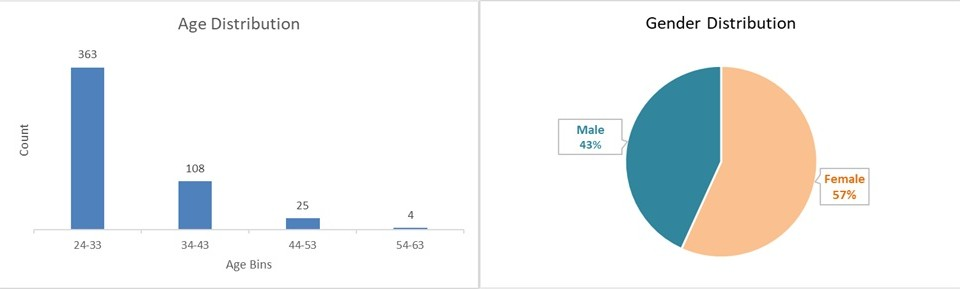
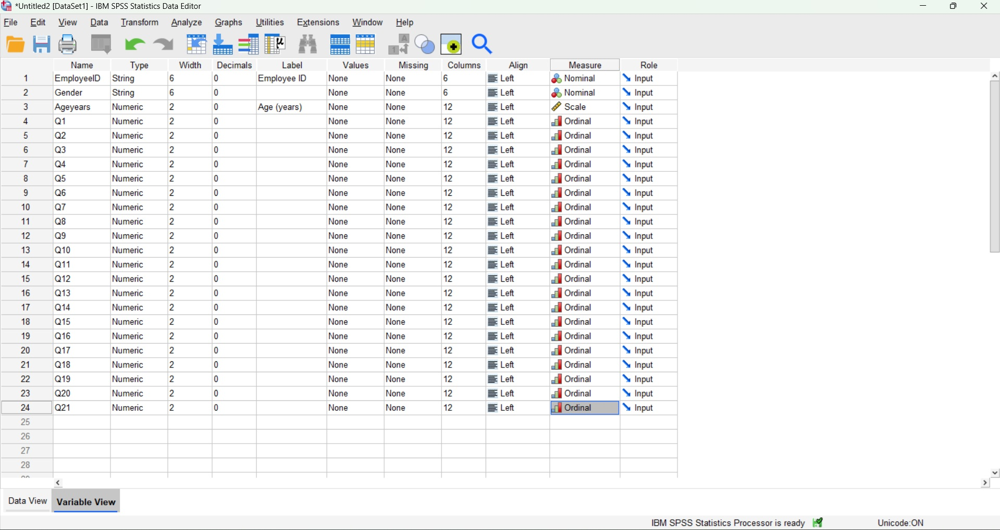
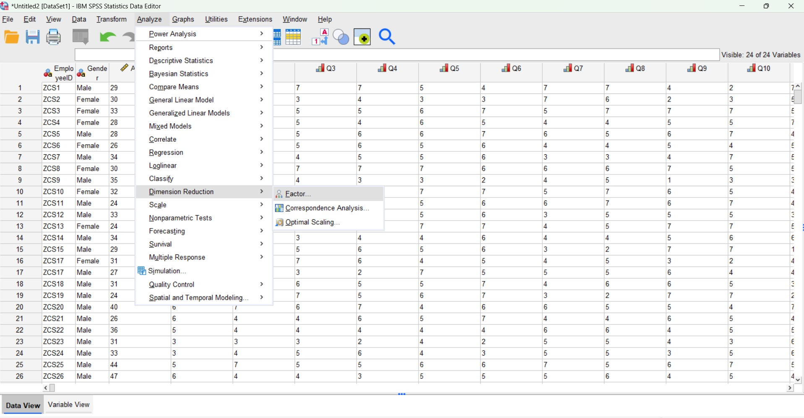
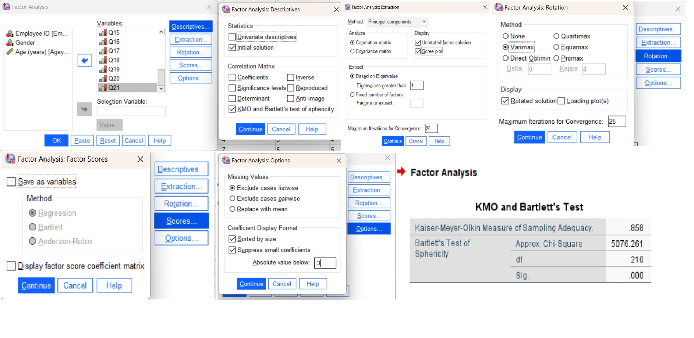
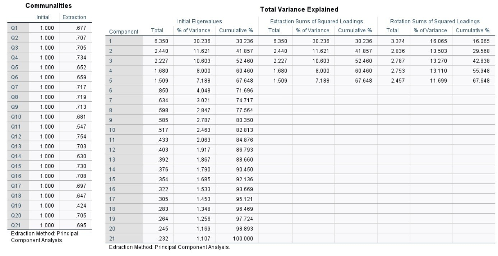
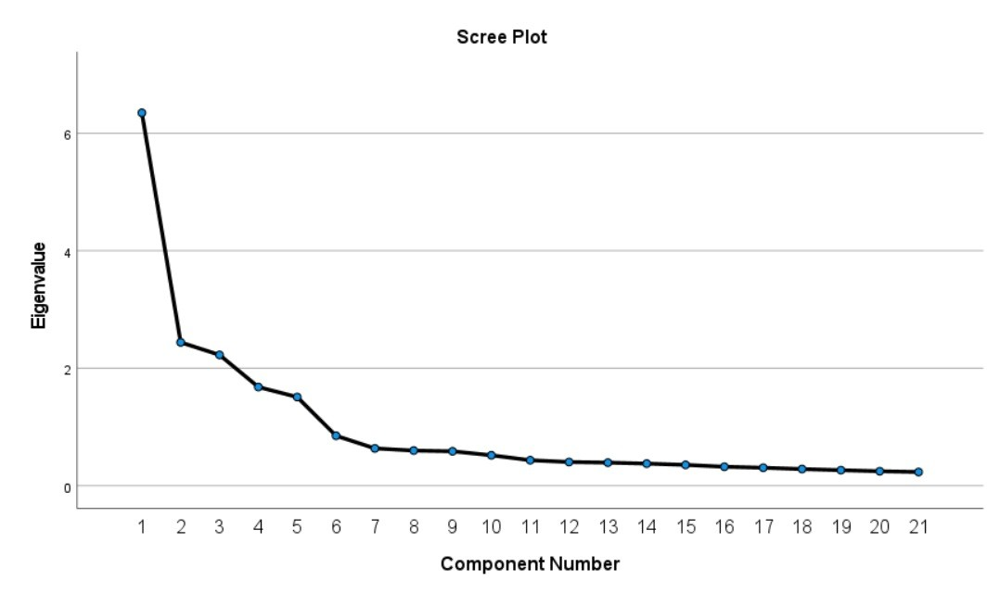
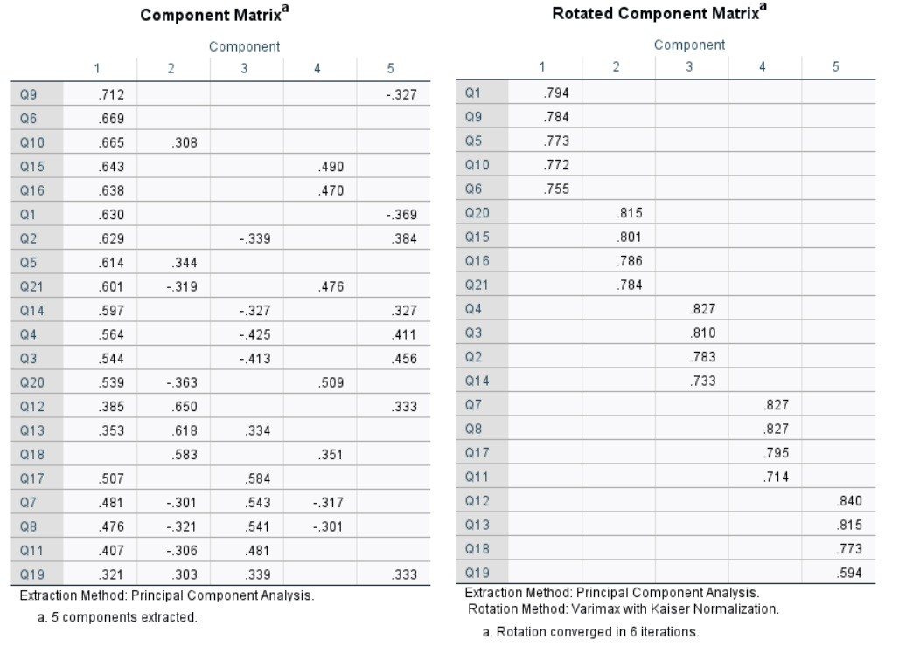
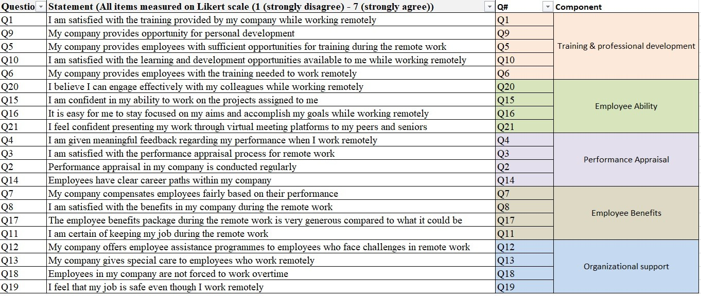

Remote Work Employee Satisfaction
Identifying Key Dimensions of Training, Performance Management, and Work-Life Balance using Factor Analysis
Project Overview
This HR analytics project investigates the key drivers of employee satisfaction in remote work environments through statistical factor analysis. By analyzing employee responses across training, performance management, benefits, and work-life balance dimensions, the study identifies distinct satisfaction factors that organizations can target to improve remote employee engagement and retention. The data consists of survey responses from 500 remote employees with 20 questions rated on a 7-point likert scale covering various aspects of their remote work experience.
Problem Statement
Organizations increasingly rely on remote work arrangements, yet measuring and understanding employee satisfaction in these settings remains challenging. With multiple factors influencing remote work experience such as training quality, performance management, work-life balance, career development, and support systems, HR teams struggle to identify which dimensions have the greatest impact on overall satisfaction. Traditional survey approaches generate large volumes of correlated data across numerous items, making it difficult to pinpoint actionable areas for improvement. This analysis addresses the need to:
- Reduce data dimensionality from 21 correlated survey items to distinct, interpretable factors
- Identify underlying dimensions that drive employee satisfaction in remote work environments
- Determine which satisfaction domains (training, performance management, benefits, support) explain the most variance
- Assess the reliability and validity of the factor structure through statistical tests (KMO, Bartlett's)
- Enable data-driven HR interventions by prioritizing high-impact satisfaction drivers
Data Preparation
Factor analysis: an interdependence technique. Factor Analysis is used to when a whole set of interdependent relationships among variables must be examined. It is data/dimensionality reduction and summarization technique. The relationships among sets of many interrelated variables are examined and represented in terms of a few underlying factors. The data is represented in the form of semantic differential scale or a Likert scale. The factors are the underlying dimension that explains the correlations among a set of variables.
Kaiser-Meyer-Olkin (KMO) measure of sampling adequacy: The Kaiser-Meyer-Olkin (KMO) measure of sampling adequacy is an index used to examine the appropriateness of factor analysis. High values (between 0.5 and 1.0) indicate that factor analysis is appropriate. Values below 0.5 imply that factor analysis may not be appropriate.
- Dataset: 500 Employee survey responces on a likert scale.
- Key Variables: Age, gender, survey responces on a scale from 1-7
- Data Cleaning: Profiled data to ensure appropriate data types are used.
- Feature Engineering: Used KMO measure to check sampling adequacy. Set respective eigenvalues, extraction criteria, rotation criteria required for analysis



Criteria settings used in SPSS


Kaiser-Meyer-Olkin (KMO) Measure = 0.858. This indicates excellent sampling adequacy for factor analysis. KMO values range from 0 to 1, where values above 0.8 are considered excellent. A score of 0.858 confirms that the patterns of correlations among your 21 survey items are compact and distinct, making the data highly suitable for identifying underlying factors.
Bartlett's Test of Sphericity: Chi-Square = 5078.261, df = 210, Sig. = 0.000 (p < 0.001). This test is highly significant, rejecting the null hypothesis that variables are uncorrelated. It confirms that the survey items have sufficient correlations to justify factor analysis—the variables are NOT independent, and meaningful factor structures can be extracted.
Factor Extraction


Extraction Results & Interpretation
Communalities Analysis
Communalities represent the proportion of variance in each survey item explained by the extracted factors. All 21 variables showed adequate to high communalities (range: 0.424-0.754), with most exceeding 0.65. This indicates that the 5-factor solution effectively captures the underlying structure of employee satisfaction in remote work settings. Variables Q12 (0.754), Q4 (0.734), Q15 (0.730), Q8 (0.719), and Q7 (0.717) demonstrated the strongest representation within the factor structure.
Variance Explained
Principal Component Analysis with Varimax rotation extracted 5 components based on the Kaiser criterion (eigenvalue > 1.0). These 5 factors collectively explain 67.65% of the total variance in employee satisfaction responses:
- Component 1: Eigenvalue = 6.350, explaining 30.24% of variance (after rotation: 16.07%)
- Component 2: Eigenvalue = 2.410, explaining 11.48% of variance (after rotation: 13.50%)
- Component 3: Eigenvalue = 2.227, explaining 10.60% of variance (after rotation: 13.27%)
- Component 4: Eigenvalue = 1.680, explaining 8.00% of variance (after rotation: 13.11%)
- Component 5: Eigenvalue = 1.509, explaining 7.19% of variance (after rotation: 11.70%)
Varimax rotation redistributed variance more evenly across factors, improving interpretability while maintaining the total variance explained. This cumulative variance of 67.65% exceeds the recommended threshold of 60% for social science research, indicating a robust factor solution.
Scree Plot Analysis
The scree plot visually confirms the decision to extract 5 factors. A steep decline in eigenvalues is observed from Component 1 (6.350) to Component 2 (2.410), followed by a more gradual descent through Component 5 (1.509). Beyond Component 5, the curve flattens significantly, with eigenvalues dropping below 1.0 and contributing minimal additional variance. The "elbow" of the curve occurs between Components 5 and 6, providing visual support for the Kaiser criterion decision to retain 5 factors. Components 6 through 21 each contribute less than 5% of variance individually and represent noise rather than meaningful patterns.
Principle Components Extraction
Rotated Component Matrix

Results
Extracted Components

- Training remains critical: Factor 1's prominence highlights that professional development opportunities are fundamental to remote employee satisfaction.
- Autonomy matters: Factor 2's prominence indicates that employees value independence in their work processes.
- Holistic approach needed: All five factors contribute meaningfully (11-16% variance each after rotation), indicating no single dimension dominates. Organizations must address multiple facets simultaneously./li>
- Support systems are essential: Organizational support (Factor 5) emerged as a distinct dimension, emphasizing the importance of formal assistance programs for remote workers.
- SPerformance transparency: Clear appraisal processes and fair compensation (Factor 3) remain crucial even when employees work remotely.